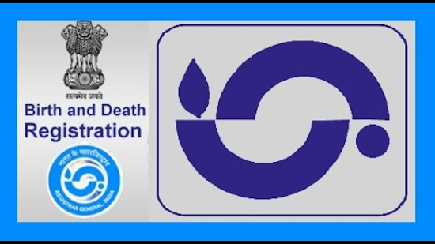

Birth and Death Registration in Karnataka
Introduction
The registration of births, deaths, and stillbirths is an essential part of maintaining vital records in Karnataka. This process ensures the proper documentation and legal recognition of life events, which are critical for government planning, services, and statistics. All birth, death, and stillbirth registrations are conducted electronically in the state through the eJanMa platform, simplifying the process for residents and authorities alike.

Highlights of Birth and Death Registration
This website provides information on all Births, Deaths, and Stillbirths electronically registered throughout Karnataka. The registration process is streamlined through the eJanMa platform, which facilitates the timely issuance of certificates. Below are the key highlights:
- Rural Areas: Births, deaths, and stillbirths occurring in rural areas are registered by Village Accountants through Nada Kacheri at the Hobli level. This ensures that rural residents have easy access to registration services.
- Government Health Institutions: Births, deaths, and stillbirths that occur in government health institutions are registered in eJanMa by the concerned Medical Officer. Certificates for these events are directly issued at the institution itself, making the process more efficient.
- Urban Local Bodies and BBMP Areas: In urban areas, including the BBMP (Bruhat Bengaluru Mahanagara Palike) area, births, deaths, and stillbirths are registered by Health Officers and Health Inspectors in their respective jurisdictions, ensuring the proper documentation of these events.
- Private Hospitals: For births or deaths occurring in private hospitals, the respective private hospital reports the event to the concerned Registrar for inclusion in the official records.
Inclusion of Name of Child in Birth Certificate
For parents who wish to include their child's name in the birth certificate, they must contact the respective Registrar or Sub-Registrar. The authorities involved in this process include:
- Village Accountants – In rural areas, the inclusion of the name in the birth certificate is handled by the respective Village Accountant.
- Health Officers and Health Inspectors – In urban areas and government health institutions, the health officers/inspectors are responsible for including the child's name in the birth certificate.
- Medical Officers – In government hospitals, the Medical Officer will assist in the inclusion of the child’s name in the birth records.
Obtaining Additional Copies of Birth and Death Certificates
If you need additional copies of the birth or death certificates, or if you require any corrections, you should contact the data entry operators at the concerned Nadakacheri or the relevant birth and death registration centers. These operators are responsible for processing and issuing certified copies of the vital records.
Corrections in Birth or Death Certificates
If there are any discrepancies or errors in the birth or death certificates, the concerned authorities will assist you in making the necessary corrections. The correction process typically involves the submission of supporting documents and proof of the correct information.
For Clarifications
If you require any clarifications regarding the registration process or need further assistance, you can contact the District Statistical Officer of the concerned district. The District Statistical Officer will provide guidance and help resolve any issues related to birth and death registrations.
Important Points to Remember
- Timely Registration: Births, deaths, and stillbirths must be registered within the stipulated time period as mandated by the government to ensure accurate records.
- eJanMa Platform: The eJanMa platform is the primary system used for registering all vital events in Karnataka, and it helps streamline the process for both residents and government authorities.
- Proof of Event: Ensure that proper documentation (e.g., medical certificates, hospital records) is available when registering the event to avoid delays or complications.
- Legal Requirements: Proper registration of births and deaths is essential for availing government services such as health care, education, and pension schemes.
Conclusion
The registration of births, deaths, and stillbirths is a vital part of ensuring that citizens of Karnataka have official documentation for life events. By utilizing the eJanMa platform, the state has made the process simpler and more accessible for residents, whether they live in rural areas, urban centers, or are receiving care at private hospitals. For any assistance with the registration process, corrections, or obtaining additional certificates, citizens can contact the relevant authorities or the District Statistical Officer for guidance.